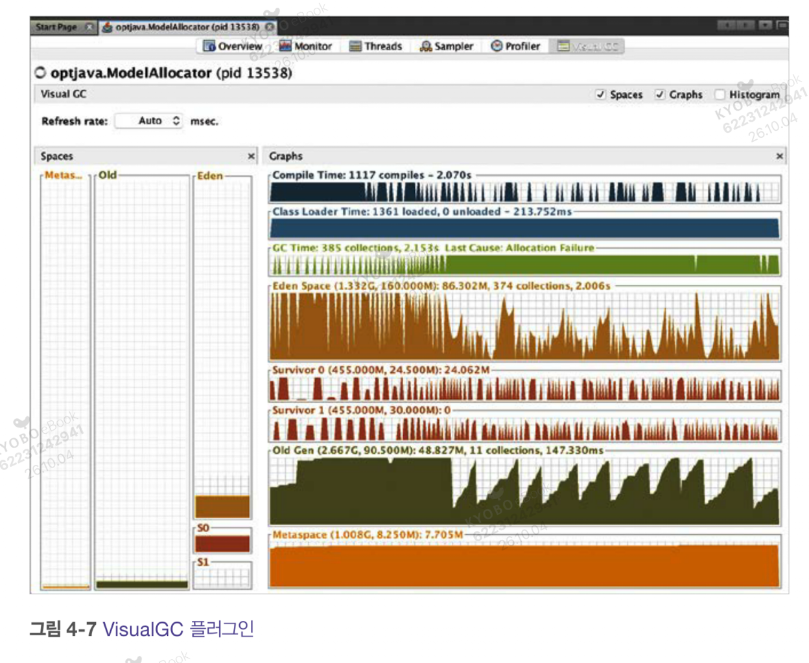
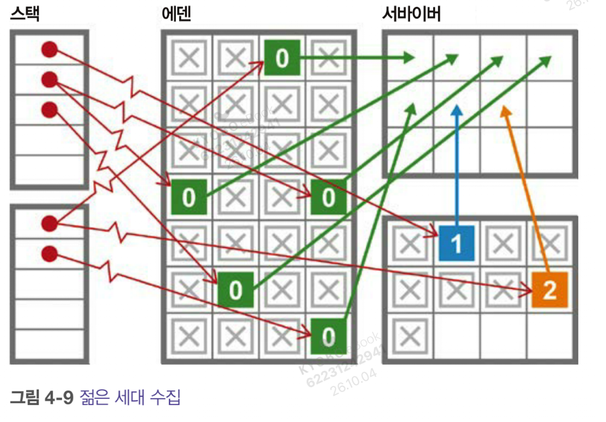
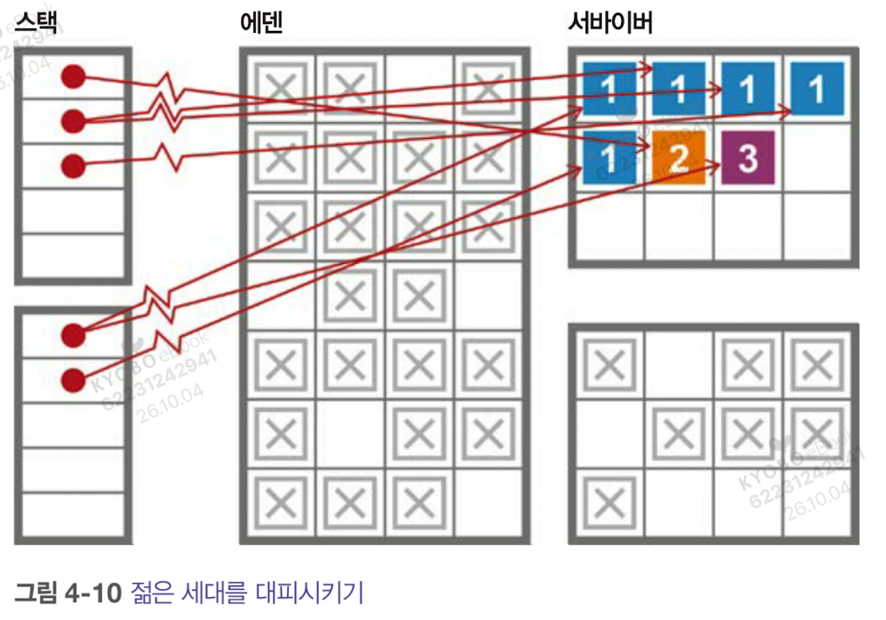
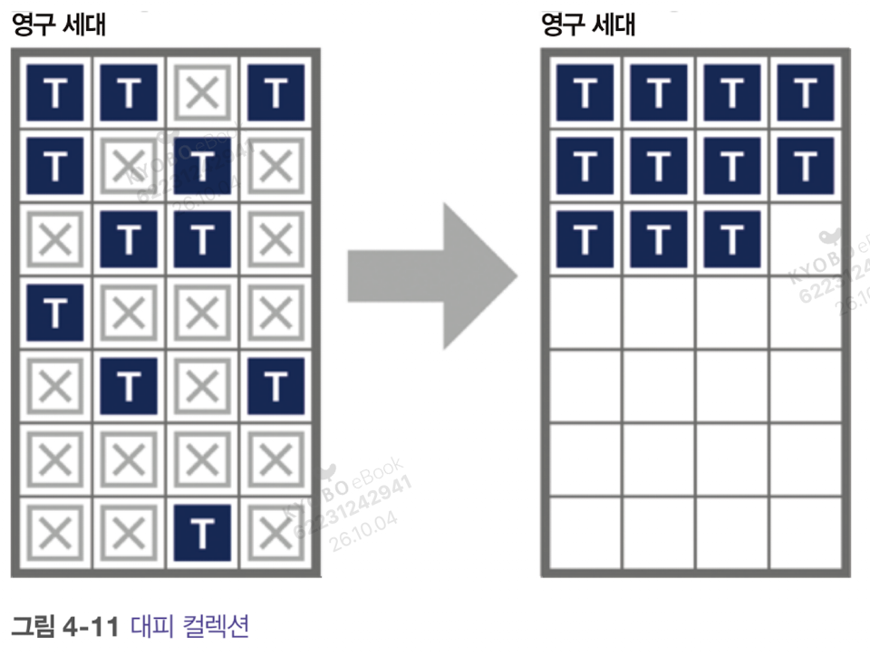

mark word 와 klass word 의 차이
둘 다 객체 헤더의 한 칸이지만 묻는 질문이 다르다. mark word 는 이 객체가 지금 어떤 상태인지를, klass word 는 이 객체가 무슨 타입인지를 담는다.
| mark word | klass word |
|---|
| 역할 | 이 객체 하나의 상태 | 이 객체의 클래스 정보로 가는 포인터 |
| 내용 | 해시코드, GC age, 락 상태 등 | klass 주소 |
| 객체 간 비교 | 객체마다 값이 다르다 | 같은 클래스면 모두 같은 값 |
| 변화 | 런타임에 계속 바뀐다. 락이 걸리고 GC 로 age 가 오른다 | 바뀌지 않는다. 객체 타입은 고정이다 |
| 압축 oop | 압축되지 않는다. 네이티브 크기 그대로 | 8바이트에서 4바이트로 줄 수 있다 |
같은 클래스의 인스턴스 둘을 나란히 놓으면 차이가 보인다.
e1: [ mark = 0x...a1 | klass = 0x3f0324a0 | 필드 ... ]
e2: [ mark = 0x...b7 | klass = 0x3f0324a0 | 필드 ... ]
서로 다르다 같다 (Entry 용 klass 공유)
출처 구분. 책의 이 페이지는 mark word 를 "인스턴스별 메타데이터"로만 설명한다. 해시코드, GC age, 락 상태가 들어간다는 내용은 핫스팟에 대한 일반 지식이다.
klass 와 Class 객체는 무엇이 다른가
이름이 비슷하지만 서로 다른 것이다. 둘 다 클래스에 관한 정보를 갖고 있지만 담긴 내용과 쓰이는 곳이 다르다.
| klass | Class 객체 |
|---|
| 정체 | JVM 내부의 클래스 메타데이터 | 자바 힙에 있는 instanceOop. 자바 코드에서 Class<?> 로 보인다 |
| 위치 | 자바 힙 밖 | 자바 힙 안. 그래서 객체 헤더가 있다 |
| 누가 가리키나 | 모든 객체의 klass word | getClass(), Entry.class 로 얻는다 |
| 담고 있는 것 | 가상 함수 테이블(vtable) | 그 외 여러 데이터와 함께, 리플렉션 호출에 쓰는 메서드 객체 배열 |
| 쓰이는 때 | toString() 같은 일반 메서드 호출 | getMethod() 같은 리플렉션 호출 |
그림 4-2에서 Entry 인스턴스의 klass word 는 Entry 용 klass 를 가리킨다. Entry.class 는 그 자체로 하나의 객체여서 klass word 가 있고, 이쪽은 Class 용 klass 를 가리킨다.
그림 4-2. Klass 와 Class 객체. 이 주제는 6장에서 JIT 컴파일을 다룰 때 더 자세히 나온다.
압축 oop
oop 는 머신 워드 크기를 따른다. 구형 32비트 머신에서는 32비트, 현대 프로세서에서는 64비트다. 64비트에서는 상당한 메모리가 낭비될 수 있어서 핫스팟이 압축 oop 를 제공한다.
-XX:+UseCompressedOops 옵션으로 켠다. 64비트 힙에서는 기본으로 켜져 있다. 켜면 아래 세 가지가 압축된다.
- 힙에 있는 모든 객체의 klass 워드
- 참조 타입의 인스턴스 필드
- 객체 배열의 각 요소
핫스팟 객체 헤더 구성
- 네이티브 크기의 마크 워드
- klass 워드 (압축될 수 있다)
- 객체가 배열이면 길이를 나타내는 32비트 값
- 정렬 규칙에 필요하면 32비트 간격
- 헤더 바로 뒤에 객체의 인스턴스 필드
그림 4-3. 압축 oop. 64비트 힙에서 klass 워드가 8바이트에서 4바이트로 줄어든다. 세 칸 합계는 그림 속 칸만 더한 값이다.
켜 두는 편이 낫다. 지연에 매우 민감한 애플리케이션에서 압축 oop 를 끄면 성능이 좋아지는 경우가 가끔 있었다. 하지만 힙 크기가 10%에서 50%까지 늘어나는 대가를 치러야 했고, 측정 가능한 이점을 얻는 애플리케이션은 매우 적다. 이런 식으로 스위치를 만지작거리는 일은 안티패턴의 대표적인 예다(부록 B).
GC 설계에서 보는 두 가지
가비지 컬렉터를 설계할 때 따지는 핵심 요소는 둘이다.
| 할당 속도 | 객체의 수명 주기 |
|---|
| 뜻 | 일정 시간 동안 새로 생성된 객체가 쓰는 메모리의 양. 보통 MB/s | 객체가 생성되어 얼마나 오래 살아 있는가 |
| 측정 | JVM 이 기본으로 보여주지 않지만 비교적 쉽게 추정할 수 있다. JFR 같은 도구가 제공한다 | 측정하거나 추정하기가 훨씬 어렵다 |
| 비중 | 사용하는 데 성능 영향이 있을 수 있다 | 할당 속도보다 훨씬 더 근본적인 요소다 |
실제 애플리케이션에서 객체의 수명 주기를 제대로 이해하기는 매우 복잡하다. 수동 메모리 관리를 반대하는 이유이기도 하다.
GC 의 핵심. 가비지 컬렉션은 메모리 회수이면서 재사용이다. 객체의 수명이 짧기 때문에 같은 물리 메모리를 반복해서 쓸 수 있다. 이 개념이 없다면 가비지 컬렉션은 전혀 작동하지 않을 것이다. 가비지 컬렉터는 다양한 트레이드오프를 균형 있게 조정해야 하고, 그 결정은 객체의 수명 주기와 속도에 달려 있다(5장).
약한 세대 가설
자바 가상 머신 메모리 관리의 중요한 부분은 소프트웨어 시스템의 런타임에서 관찰되는 약한 세대 가설을 기반으로 한다.
이 가설에 따르면 자바 가상 머신과 유사한 소프트웨어 시스템에서 객체의 수명 분포는 이중 분포(bimodal) 를 나타낸다. 대부분의 객체는 수명이 매우 짧고, 일부 객체는 훨씬 더 길게 산다.
그림 4-4. 약한 세대 가설. 세로축은 관련된 메모리, 가로축은 수명 주기.
객체 지향 워크로드의 동작을 실험적으로 검증한 결과이며, 결론은 명확하다.
- GC 힙은 수명이 짧은 객체를 쉽고 빠르게 수집할 수 있도록 구조화되어야 한다.
- 수명이 긴 객체는 짧은 객체와 분리되어야 한다.
이는 힙이 두 개의 별도 영역, 곧 짧은 수명의 영역과 긴 수명의 영역을 가져야 한다는 뜻이다. 두 영역은 각각 젊은 세대 컬렉션 과 전체 컬렉션 에서 따로 수집된다.
왜 "약한" 가설인가
영어 원문은 weak generational hypothesis 다. 주장하는 범위가 좁아서 "약한"이 붙었고, 짝이 되는 strong 가설이 따로 있다.
| 약한(weak) | 강한(strong) |
|---|
| 주장 | 대부분의 객체는 젊어서 죽는다 | 객체는 나이를 먹을수록 죽을 확률이 계속 줄어든다 |
| 범위 | 젊은 객체만 말한다 | 나이와 생존율의 관계까지 말한다 |
| 현실 | 거의 모든 워크로드에서 성립한다 | 맞지 않는 경우가 많다 |
- 강한 가설은 약한 가설의 반대가 아니라 확장판이다. 강한 가설이 참이면 약한 가설도 참이다.
- "약한"은 근거가 약하다는 뜻이 아니다. 오히려 가장 널리 확인된 가설이다.
- 세대별 GC 에 필요한 것은 "에덴을 자주 청소하면 대부분 죽은 객체라 싸다"는 사실 하나다. 약한 가설만으로 충분하다.
출처 구분. weak 와 strong 의 구분은 책 이 페이지가 아니라 GC 문헌의 일반 지식이다. 책에는 "약한 세대 가설"이라는 이름만 나온다.
에덴에서의 수집
주요 기술 하나는 최근 생성된 객체가 있는 영역(보통 에덴)에 마크 앤 스윕 컬렉션을 쓰는 것이다. 스윕 단계에서 컬렉터는 대피(evacuation) 단계를 거쳐 생존한 객체를 긴 수명의 공간으로 옮긴다. 그다음 에덴 공간 전체를 한 번에 회수한다.
그림 4-5. 단순 세대별 힙. 스택에서 닿는 객체(Y)만 살아남아 영구 세대로 옮겨진다. 이 그림은 개념도이고 칸 위치에는 의미가 없다.
앞에서 헷갈린 지점. 책의 "마크 앤 스윕 + 대피" 는 이전에 구분한 Mark 와 Copying 이 합쳐진 설명이다. 살아 있는지 표시하고(Mark), 산 것만 다른 곳으로 옮기고(복사), 원래 영역은 통째로 비운다.
용어 주의. 그림의 "영구 세대" 는 오래 산 객체가 가는 영역이라는 뜻이다. 일반적으로는 Old 또는 Tenured 영역이라고 부른다. 자바 8 이전의 PermGen(클래스 메타데이터를 두던 영역)과는 다른 개념이다. 이 구분은 책 이 페이지가 아니라 일반 지식이다.
세대별 힙의 장점: 죽은 객체를 치우는 비용이 없다
세대별 힙의 주된 이점 하나는 죽은 객체를 수집하는 데 비용이 전혀 들지 않는다는 점이다. 죽은 객체에 대한 기록은 필요하지 않고, 관심의 대상은 오직 활성 객체뿐이다.
왜 비용이 들지 않는가
앞서 본 에덴 수집은 세 단계다. 루트에서 닿는 살아있는 객체만 따라가고, 그것을 오래 사는 영역으로 대피시키고, 에덴 전체를 한 번에 회수한다. 마지막 단계에서 죽은 객체를 하나씩 찾아 해제하지 않는다. 영역을 통째로 비우면 그 안의 죽은 객체는 방문도 기록도 없이 함께 사라진다.
| 세대 구분 없는 Mark-Sweep | 젊은 세대 대피 |
|---|
| 훑는 범위 | 힙 전체 | 살아있는 객체만 |
| 죽은 객체 | Sweep 이 하나씩 찾아 해제한다 | 방문하지 않고 영역째 회수한다 |
| 산 객체 | 제자리에 둔다 | 따라가며 복사한다 |
| 비용이 따라가는 것 | 표시는 산 객체 수, 해제는 힙 크기 | 살아있는 객체 수 |
두 줄 모두 같은 12칸이다. 밑줄은 GC 가 방문한 칸이다. 위쪽은 12칸 모두, 아래쪽은 산 객체 3칸뿐이다.
왜 세대별 힙이어야 하는가
- 약한 세대 가설에 따라 에덴은 대부분 죽은 객체이고 살아있는 객체는 소수다.
- 소수만 복사하면 되니 대피 방식이 에덴에서 싸게 먹힌다.
- 세대 구분이 없어서 힙이 한 덩어리라면 오래 사는 객체까지 매번 복사하거나 전체를 훑어야 해서 이 방식이 이득이 되지 않는다.
- 그래서 힙을 나눠 "대부분 죽는 영역"을 따로 만들어야 "죽은 것은 건드리지 않고 통째로 비운다"는 방식을 쓸 수 있다.
해석 주의. "전혀 안 든다"는 죽은 객체를 개별로 처리하지 않는다는 뜻이다. 살아있는 객체를 따라가고 복사하는 비용은 그대로 든다. 이 풀이는 책 문장에 설명을 보탠 것이다.
핫스팟은 약한 세대 가설을 활용하고 세대별 힙의 구조를 개선하려고 이 밖에도 여러 메커니즘을 쓴다. 그중 두 가지는 "GC 기술" 탭에서 본다(4.6).
핫스팟의 프로덕션 GC 기술 (4.6)
지금까지 배운 내용을 바탕으로, 핫스팟에서 가장 단순한 형태의 프로덕션 가비지 컬렉터가 어떻게 작동하는지 이해하는 데 도움이 되는 기술을 본다. 먼저 할당 성능을 높이는 기술, 그다음 젊은 세대를 수집하는 방식이다.
스레드-로컬 할당 버퍼 (4.6.1)
에덴은 대부분의 객체가 생성되는 영역이고, 수명이 매우 짧은 객체가 있는 곳이다. 다음 GC 사이클이 돌기 전에 살아남지 못하는 객체는 이 영역을 벗어나지 않는다. 약한 세대 가설에 따르면 이 영역의 많은 객체를 추가 비용 없이 수집할 수 있으므로 에덴을 효율적으로 관리하는 것이 중요하다.
할당 효율을 높이려고 핫스팟은 에덴을 여러 버퍼로 나누고, 애플리케이션 스레드마다 독립된 에덴 영역을 할당해 새 객체를 만들게 한다. 각 스레드가 자기 버퍼에서만 작업하므로 다른 스레드가 같은 버퍼에서 할당하는 것을 걱정할 필요가 없다. 이 영역을 스레드-로컬 할당 버퍼(thread-local allocation buffer, TLAB) 라고 한다.
책 그림 4-6 의 개념을 다시 그린 것이다. 칸 크기와 개수에는 의미가 없다.
동작 방식
- 스레드가 TLAB 를 독점 제어하므로 JVM 스레드에서의 객체 할당은 O(1) 시간 복잡도다.
- 스레드가 새 객체를 만들면 저장 공간이 할당되고, 스레드 로컬 포인터가 다음 사용 가능한 주소로 갱신된다.
- C 코드로는 포인터를 옮기는 작업이다. "다음 사용 가능" 포인터를 앞으로 옮기는 명령 하나로 처리된다.
- 스레드가 현재 TLAB 를 모두 채우면 JVM 이 에덴의 새 영역을 할당하고 새 TLAB 포인터를 준다.
- 더 줄 TLAB 가 없으면 젊은 세대 가비지 컬렉션이 발생한다.
TLAB 크기는 동적이다. 핫스팟은 스레드에 할당하는 TLAB 크기를 동적으로 조정한다. 특정 스레드가 메모리를 빠르게 소모하면 그 스레드에 더 큰 TLAB 를 줘서 버퍼를 새로 받는 오버헤드를 줄일 수 있다.
반구형 대피 컬렉터 (4.6.2)
대피형 컬렉터의 대표 사례가 반구형 대피 컬렉터(hemispheric evacuating collector) 다. 같은 크기의 두 공간을 쓴다. 핵심 개념은 한 공간을 오래 지속되지 않는 객체의 임시 보관 장소로 활용하는 것이다.
효과는 두 가지다. 수명이 짧은 객체가 영구 세대(tenured generation)에 섞여 들어가는 것을 막고, 전체 가비지 컬렉션의 빈도를 줄인다.
두 공간의 기본 속성
- 컬렉터가 현재 활성인 반구를 수집할 때 객체는 압축 방식으로 다른 반구로 이동하고, 수집된 반구는 재사용을 위해 비워진다.
- 공간의 절반은 항상 완전히 비워진 상태로 유지된다.
반구형 방식의 한 사이클. 칸 수에는 의미가 없다.
대가와 핫스팟의 적용
- 컬렉터의 반구형 영역에 실제로 저장할 수 있는 메모리의 두 배를 쓰게 된다. 다소 비효율적으로 보이지만 공간 크기가 과도하지 않다면 유용하다.
- 핫스팟은 에덴과 결합한 이 반구형 방식을 젊은 세대 컬렉터에 적용한다.
- 핫스팟 젊은 힙의 반구형 영역이 서바이버 공간이다. 일반적으로 에덴보다 상대적으로 작고, 젊은 세대 컬렉션이 진행될 때마다 역할이 교대된다.
일반 지식. 서바이버를 거치게 하면 몇 번의 GC 를 버틴 객체만 오래 사는 영역으로 승격된다. 이 승격 규칙은 책 이 페이지가 아니라 일반 지식이다.
그림 4-7. VisualGC 플러그인
VisualGC 로 실행 중인 JVM(optjava.ModelAllocator, pid 13538)의 힙 영역과 GC 를 실시간으로 볼 수 있다. 왼쪽 Spaces 는 영역별 현재 사용량, 오른쪽 Graphs 는 시간에 따른 변화다.

그림 4-7. VisualGC 플러그인
숫자로 확인되는 것
- S0 와 S1 이 번갈아 찬다. 두 그래프의 막대가 엇갈려 올라가고, 한쪽은 항상 비어 있다. 반구형 방식의 역할 교대가 그대로 보인다.
- 횟수가 맞아떨어진다. 에덴 374번과 Old 11번을 더하면 385번으로 GC Time 의 385 collections 와 같다. 시간도 2.006s 와 0.147s 를 더하면 2.153s 다.
- 젊은 세대 수집이 훨씬 잦다. 374번 대 11번이다. 대부분의 객체가 젊어서 죽는다는 약한 세대 가설과 맞는다.
- 한 번당 비용은 젊은 세대 쪽이 작다. 계산하면 에덴이 약 5.4ms(2.006s ÷ 374), Old 가 약 13.4ms(147.330ms ÷ 11)다. 산 객체만 옮기는 대피 방식이라 수집이 가볍다.
- Last Cause: Allocation Failure. 마지막 GC 의 원인이 할당 실패다. 앞의 TLAB 에서 본 "더 줄 할당 버퍼가 없으면 젊은 세대 GC 가 발생한다"는 흐름과 이어진다.
읽기 주의. 라벨 괄호는 (최대 크기, 현재 확보한 용량): 현재 사용량으로 읽었다. 이 표기 규칙은 책 이 페이지에 설명이 없고 VisualGC 의 일반적인 표기를 따라 읽은 것이다. 위 값들이 모두 이 규칙에서 현재 사용량 ≤ 확보 용량을 만족해서 그렇게 판단했다. 5.4ms 와 13.4ms 는 그림의 수치로 내가 나눈 값이고 책에 나오는 숫자는 아니다. Metaspace 가 클래스 메타데이터를 두는 힙 밖 영역이라는 점도 일반 지식이다.
병렬 컬렉터 (4.7)
자바 8 이하에서 자바 가상 머신의 기본 가비지 컬렉터는 병렬 컬렉터였다. 이 컬렉터들은 젊은 세대와 전체 컬렉션 모두에서 STW(stop-the-world) 방식으로 작동하고, 처리량 최적화에 중점을 둔다. 애플리케이션 스레드를 모두 중지한 뒤 사용 가능한 모든 CPU 코어로 메모리를 가능한 한 빠르게 수집한다.
| 컬렉터 | 역할 |
|---|
| 병렬 가비지 컬렉션 | 젊은 세대를 위한 가장 간단한 컬렉터 |
| ParNew | 병렬 가비지 컬렉션의 변형. 지금은 쓰지 않는 동시 마크 스윕 컬렉터와 함께 쓰였다 |
| ParallelOld | 오래된 세대를 위한 병렬 컬렉터 |
병렬 컬렉터는 여러 면에서 비슷하다. 가능한 한 빠르게 활성 객체를 식별하려고 여러 스레드를 쓰고, 최소한의 기록 관리(bookkeeping)로 작동하도록 만들어졌다.
버전 주의. 자바 17부터 동시 마크 스윕 컬렉터가 제거되어 하나의 병렬 가비지 컬렉션만 존재한다. 이 컬렉션은 젊은 세대와 오래된 세대의 병렬 컬렉션으로 구성된다. 자바 11 이상의 기본 컬렉터는 G1 이다(다음 장).
젊은 병렬 컬렉션 (4.7.1)
언제 시작되는가
가장 일반적인 컬렉션이다. 스레드가 에덴에 객체를 할당하려는데 TLAB 에 공간이 없고, JVM 이 새 TLAB 도 줄 수 없을 때 발생한다. 이때 JVM 은 모든 애플리케이션 스레드를 중지할 수밖에 없다. 한 스레드가 할당할 수 없다면 곧 모든 스레드가 할당할 수 없는 상태가 되기 때문이다. 앞의 "GC 기술" 탭에서 본 "줄 TLAB 가 없으면 젊은 세대 GC" 가 이 지점이다.
TLAB 밖의 할당. 스레드는 TLAB 밖에서도 메모리를 할당할 수 있다(메모리 블록이 클 때 등). 이상적인 상황은 비 TLAB 할당의 비율이 낮을 때다. 수명이 짧은 큰 객체를 너무 많이 할당하면 추가 전체 가비지 컬렉션이 유발되고, 이는 젊은 세대 컬렉션보다 비용이 훨씬 크다.
어떻게 진행되는가
- 애플리케이션 스레드를 모두 중지한다.
- 젊은 세대(에덴과 현재 비어 있지 않은 서바이버 공간)를 확인하고, 가비지가 아닌 모든 객체를 식별한다.
- GC 루트를 시작점으로 병렬 마킹 스캔을 한다. 오래된 세대에서 오는 루트는 카드 테이블로 식별한다.
- 생존한 모든 객체를 현재 비어 있는 서바이버 공간으로 이동시킨다. 이동하면서 객체의 세대 카운트를 증가시킨다.
- 에덴과 방금 대피한 서바이버 공간을 재사용 가능한 공간으로 표시한다.

생존 객체(초록 0, 파랑 1, 주황 2)가 빈 서바이버로 이동한다. 숫자는 세대 카운트로 읽힌다.

이동 뒤. 객체들이 한 서바이버에 모였고 숫자가 1씩 늘었다(0은 1, 1은 2, 2는 3). 에덴과 다른 서바이버는 비워진다.
이 방식은 약한 세대 가설을 최대한 활용해 활성 객체만 처리한다. 또 가능한 한 효율적으로 작동하며 모든 코어를 활용해 STW 일시 중지 시간을 줄이는 것을 목표로 한다.
읽기 주의. 그림 속 숫자가 세대 카운트라는 해석은 본문의 "이동하면서 세대 카운트를 증가시킴"과 그림의 숫자 변화(0, 1, 2에서 1, 2, 3)를 맞춘 것이다. 이전 탭의 반구형 컬렉터가 바로 이 동작이다. 서바이버 둘이 번갈아 쓰이고 하나는 비어 있다.
오래된 병렬 컬렉션 (4.7.2)
ParallelOld 는 자바 8까지 오래된 세대의 기본 컬렉터였다. 지속적인 처리량 성능을 중시하는 일부 애플리케이션에서는 지금도 G1 보다 나은 성능을 보인다.
병렬 가비지 컬렉션과 공통점이 있지만 근본적인 차이가 있다. 병렬 가비지 컬렉션은 반구형 대피 컬렉터이고, ParallelOld 는 단일 연속 메모리 공간을 쓰는 압축형 컬렉터다.
| 젊은 병렬 컬렉션 | ParallelOld |
|---|
| 방식 | 반구형 대피. 산 객체를 다른 공간으로 복사한다 | 제자리 압축(in-place compaction). 같은 공간 안에서 재배치한다 |
| 대피할 공간 | 서바이버 공간이 있다 | 오래된 세대에는 대피할 공간이 없다 |
| 메모리 사용 | 반쪽은 항상 비워 둔다 | 매우 효율적이고 단편화를 피한다 |
| 대가 | 메모리를 두 배로 쓴다 | 전체 컬렉션 사이클에서 상당한 CPU 사용량이 든다 |
오래된 세대에는 대피할 공간이 없어서, 객체가 소멸하며 남긴 공간을 회수하려고 같은 세대 안에서 객체를 재배치한다.

같은 공간 안에서 산 객체(T)를 앞쪽으로 모아 뒤쪽을 한 덩어리의 빈 공간으로 만든다.
캡션 주의. 그림의 캡션은 "대피 컬렉션"이지만 그림이 보여주는 것은 본문이 말한 제자리 압축이다. 그림의 "영구 세대" 라벨은 오래된(tenured) 세대를 뜻한다.
두 세대는 성격이 다르다
- 젊은 공간은 수명이 짧은 객체를 처리하는 곳이라 점유율이 할당과 GC 정리 작업에 따라 크게 변동한다.
- 오래된 공간은 눈에 띄는 변동이 적다. 간혹 큰 객체가 직접 생성되기도 하지만 보통은 컬렉션 때만 바뀐다. 젊은 세대에서 승격되거나, 오래된 세대나 전체 컬렉션에서 객체를 다시 검사하고 재배치할 때 바뀐다.
직렬 컬렉터와 SerialOld (4.7.3)
주로 경고의 사례로 실린 컬렉터다. 병렬 가비지 컬렉션, ParallelOld 와 비슷하게 작동하지만 가비지 컬렉션을 수행할 때 단일 CPU 코어만 쓴다. 동시 실행을 지원하지 않고 여전히 STW 방식이다.
멀티코어 시스템에서는 비효율적이다. 코어 하나가 STW 수집을 하는 동안 나머지 CPU 는 모두 유휴 상태여서 일시 중지 시간이 불필요하게 길어진다. 특별한 이유가 없다면 쓰지 않는 것이 좋다(9.4.1절 "컨테이너와 가비지 컬렉션").
병렬 컬렉터의 한계 (4.7.4)
병렬 컬렉터는 한 번에 세대 전체를 처리하며 가능한 한 효율적으로 수집하도록 설계됐다. 그러나 완전한 STW 방식이라는 단점이 있다. 약한 세대 가설 덕분에 젊은 세대에서는 생존 객체가 매우 적어 보통 큰 문제가 되지 않는다.
비용은 산 객체 수에 비례한다. 젊은 병렬 컬렉터는 죽은 객체를 전혀 건드리지 않도록 설계됐고, 마킹 단계의 길이는 생존 객체의 (적은) 수에 비례한다. 앞서 "세대별 힙의 장점"에서 본 내용과 같은 이야기다.
| 젊은 세대 컬렉션 | 오래된 세대 컬렉션 |
|---|
| 크기 | 작다 | 기본적으로 젊은 세대의 7배 |
| 생존 객체 | 매우 적다 | 수명이 긴 객체가 많아 많을 가능성이 크다 |
| 일시 중지 | 대부분의 워크로드에서 매우 짧다. 기본 설정 2GB JVM 이면 몇 밀리초, 심지어 밀리초 이하일 수도 있다 | 젊은 세대보다 훨씬 길어질 수 있다 |
마킹 시간은 해당 영역의 활성 객체 수에 비례한다. 오래된 객체는 수명이 긴 경우가 많아서 전체 컬렉션에서 생존하는 객체가 많아질 가능성이 크다.
ParallelOld 의 약점. STW 시간이 힙 크기에 거의 선형으로 비례해 늘어난다. 힙이 계속 커지면 일시 중지 시간 문제로 확장성의 한계가 드러나기 시작한다.
가비지 컬렉션 이론을 처음 접하면 마크 앤 스윕 알고리즘에 약간의 수정을 가해 STW 시간을 줄일 수 있다고 생각하기 쉽다. 하지만 현실적으로 불가능하다. 이 문장은 이 페이지에서 끊겨 있어서 이유는 다음 페이지에서 이어진다.
그래서 다음 장에서 G1, 동시 컬렉터, ZGC 같은 대안을 다룬다.